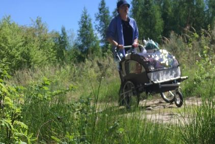
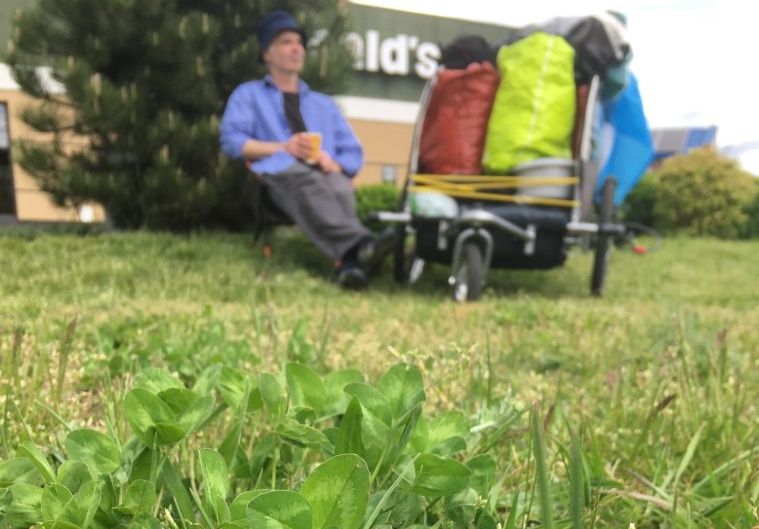
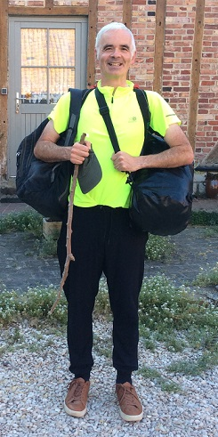
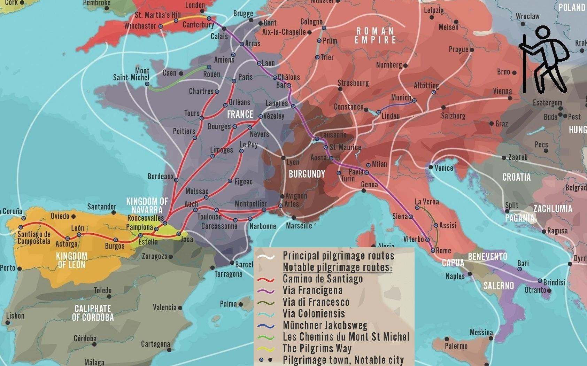

Hi, Enda here - I'm walking around Europe on the ancient pilgrim paths - the Camino de Santiago and Via Francigena . I'll stop at some of the great European shrines too.
I live simply on about €10 per day and stay at campsites or pilgrim shelters. As I walk along I like to look at Nature and dedicate the pilgrimage to all those in ill-health.



